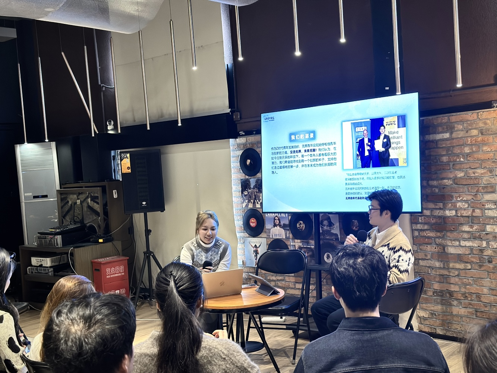
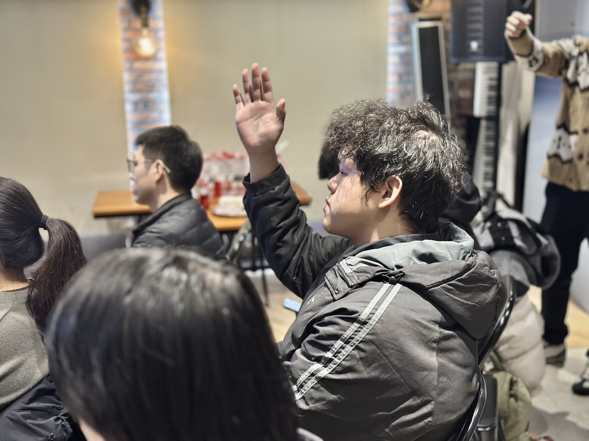
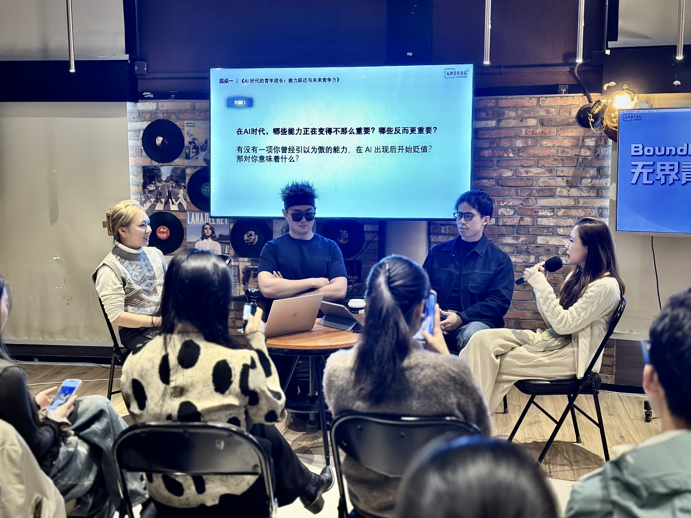

无界青年创新沙龙｜2025 年度收官活动在上海成功举办
无界青年论坛 2025 年度收官活动 · 上海
活动亮点
- 汇聚近 50 位青年从业者与创业者，覆盖 AI、科研、创业、投资及内容等多领域
- 围绕「AI 时代的能力跃迁」与「年轻创始人的 0→1 路径」两大核心议题展开深入交流
- 通过两场主题圆桌与自由交流环节，促成多视角、跨领域的思想碰撞
- 与会嘉宾从科研、产品、教育与创业实践出发，分享真实判断与长期思考
活动回顾
12 月 23 日，无界青年论坛在上海成功举办 2025 年度收官活动——无界青年创新沙龙。本次活动吸引了来自 AI、科研、创业、投资及内容领域的近 50 位青年从业者与创业者参与，围绕 AI 时代下的能力跃迁与青年创业路径展开深入交流。
活动以「AI 时代的能力跃迁」与「年轻创始人的 0→1 路径」为核心议题，通过两场主题圆桌与自由交流环节，促成了多视角、跨领域的思想碰撞。与会嘉宾从科研、产品、教育与创业实践等不同背景出发，分享了在 AI 技术快速演进背景下的真实判断与长期思考。
圆桌讨论亮点
在「AI 时代的能力跃迁」主题圆桌中，与会者探讨了在 AI 快速发展的时代背景下，个人和团队需要具备的核心能力。讨论涉及技术深度与跨领域整合能力的平衡、学习与创新的关键路径等，为现场参与者提供了宝贵的成长启示。
在「年轻创始人的 0→1 路径」主题圆桌中，多位创业者分享了从零到一的具体经验与挑战，包括如何识别赛道机遇、搭建初创团队、融资与商业模式探索等关键环节，为有志创业的参与者指点迷津。
自由交流与 Networking
在随后的自由交流与 Networking 环节中，现场围绕具体项目、研究方向与创业实践展开了充分互动，整体交流氛围开放而深入，获得参与者的广泛认可。众多参与者在此环节建立了深度连接，为后续的合作与资源对接奠定了坚实基础。
2025 年的圆满收官
本次创新沙龙的成功举办，标志着无界青年论坛 2025 年线下活动的圆满收官。一年来，论坛在多个城市成功举办了一系列高质量的活动，包括人才对接、创业大赛支持、技术交流等，有力连接了海内外青年创新力量。
展望未来
未来，无界青年论坛将持续在不同城市与主题下，推动高质量青年交流，链接更多青年力量，共同探索 AI 时代的成长与创业新路径。论坛致力于为全球青年创新者提供连接、赋能与成长的平台，让交流无界，让未来无限。
交流无界，未来无限!
活动现场

